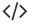

Extended API
The clean and powerful WebDriver API has been extended to deliver more features. ExtWebDriver provides useful API for writing UI automation, which you can easily extend for your needs.
Widget Library
There is no need to rewrite automation code to handle HTML widgets. ExtWebDriver provides implementations for popular HTML widgets such as Table, Button, CheckBox, RadioButton, Select and more.
 Session Factory
Session Factory
With simple configuration, you can create WebDriver browser sessions to suit your test needs. ExtWebDriver provides session management capabilities to ease development and execution.
 GUI Properties
You can parameterize your XPaths, CSSSelectors and other locator types for maximum reusability. This makes it easier to maintain your automation code.
Multiple Browsers
Run your automated tests against your favorite browsers such as Chrome, Firefox, and IE. All the browsers and versions supported by WebDriver are available for you to use out of the box.
 Open Source
Open Source
This project is developed and maintained by the Open Source community on GitHub. You can use ExtWebDriver for free and easily extend it for your needs.